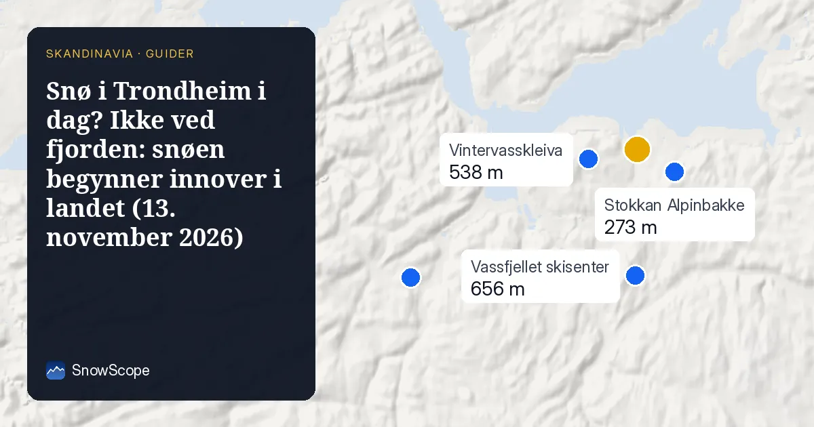

Snø i Trondheim i dag? Ikke ved fjorden: snøen begynner innover i landet (13. november 2026)
Trondheims værstasjoner sendte morgenmeldingene sine fredag, men ingen av dem meldte snø på bakken, og stasjonen på Ørland, på andre siden av fjorden, meldte bar bakke. For å finne målt snø må man innover i landet: 5 cm i Meråker, 67 km øst, og 18 cm i Tågdalen, oppe på 415 moh. mot sørvest.
Se snøprognosen for Trondheim direkte i SnowScope-appenSnødybde, puddervarsler og 3D-kartet, gratis.
Innover og høyere: hvitt
Mønsteret rundt Trøndelag er tydelig. Lavt og nær sjøen: ingenting. Innover i landet og høyere: snø. Meråker, på 171 m i Stjørdalen, gikk fra 3 cm torsdag til 5 cm. Tågdalen, på 415 m, har 18 cm. Storlien, like over svenskegrensen på 583 m, har 8 cm, og Røros, på 630 m, 11 cm.

Hva som er normalt i byen
Snøhistorikken vår for Trondheim nær fjorden dekker 46 vintre. Den 13. november lå det snø på bakken i 26 av dem, men midtverdien er bare rundt 2 cm, og én vinter av fire hadde 8 cm eller mer. Halvparten av vintrene hadde fått sin første varige snø innen 11. november, så byen ligger noen dager etter, ikke mer.
De siste fem vintrene var denne datoen bar eller nesten bar. Den 1. desember er det normale rundt 7 cm, midt i desember rundt 16 cm og midt i januar rundt 32 cm.
Helgen: mildt og vått
Fredag og lørdag kan gi litt våt snø, opptil 1 eller 2 cm, men med ettermiddagstemperaturer opp mot 5 °C blir den neppe liggende i byen. Søndag og mandag er milde, 2 til 4 °C, med lett regn. Innlandsdalene beholder snøen; Trondheim holder seg trolig grønn.
Tips til skiløpere
- For en hvit tur i helgen kan åsene i Bymarka være beste sjanse nær byen; for ordentlig snø, kjør innover mot Meråker eller Røros.
- Våt snø på kald mark om morgenen: forsiktig på sykkelveiene og i de bratte gatene.
- Kjører du østover mot Sverige, regn med vinterføre fra Meråker og videre.
Flere kart (eksterne nettsteder)
Referanser og kilder
- MET Norway, free meteorological data (station reports) www.met.no/en/free-meteorological-data
- Ogimet, archive of the international SYNOP station reports (Norway, WMO block 01) www.ogimet.com/
- SMHI, open meteorological observations (snow depth, daily) www.smhi.se/data/meteorologi/ladda-ner-meteorologiska-observationer
- Open-Meteo, weather forecast data (ECMWF and ICON models) open-meteo.com/
Om tallene
Snødybde i dag: målt ved værstasjoner om morgenen 13. november 2026 (Meteorologisk institutts stasjonsrapporter i det internasjonale SYNOP-formatet, SMHI). En stasjon måler snøen på sin egen lille flekk, så noen kilometer unna og hundre meter høyere kan bakken se annerledes ut. Vanlig snødybde for datoen: SnowScopes snøhistorikk, 46 vintre (1980-81 til 2025-26), en modell av fortiden i byens høyde, ikke en stasjonsserie. Helgen: to værmodeller (ECMWF IFS og DWD ICON via Open-Meteo), oppgitt som et spenn. Steder og regler: de offisielle sidene nedenfor.
Siter denne rapporten
For forskning, undervisning eller presse: tallene og diagrammene kan brukes fritt under CC BY 4.0 med denne kildehenvisningen.
SnowScope (2026), Snø i Trondheim i dag? Ikke ved fjorden: snøen begynner innover i landet (13. november 2026), https://snowscope.app/blog/nb/2026/11/trondheim-snow-today-13-november-2026.html, hentet 2026-11-13
SnowScope (Atlas Labs). (2026, November 13). Snø i Trondheim i dag? Ikke ved fjorden: snøen begynner innover i landet (13. november 2026). SnowScope snow reports. https://snowscope.app/blog/nb/2026/11/trondheim-snow-today-13-november-2026.html
BibTeX
@misc{snowscope2026trondheimsnowtoday13nove,
author = {{SnowScope (Atlas Labs)}},
title = {Snø i Trondheim i dag? Ikke ved fjorden: snøen begynner innover i landet (13. november 2026)},
year = {2026},
month = nov,
howpublished = {\url{https://snowscope.app/blog/nb/2026/11/trondheim-snow-today-13-november-2026.html}},
note = {Published 2026-11-14 13:29 UTC; accessed 2026-11-13}
}· CC BY 4.0 · Metoder, data og verktøy →
Følg Trondheim
Gratis: en melding når nysnø er på vei, og prognosen hver morgen.